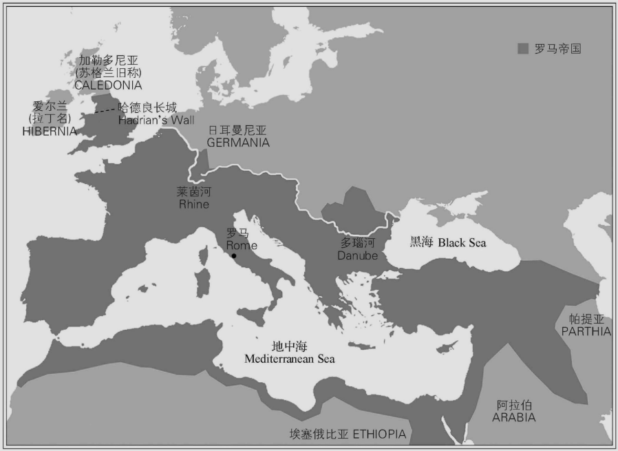
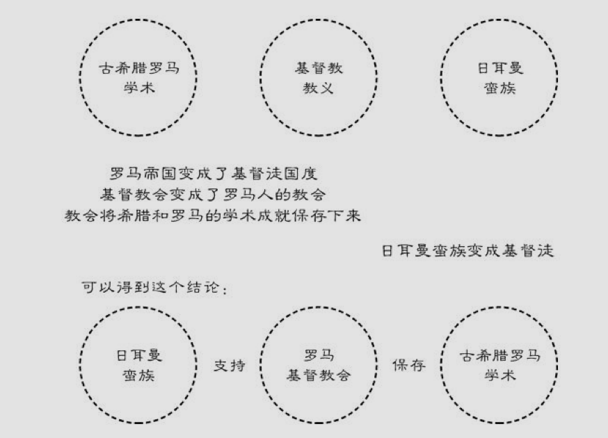
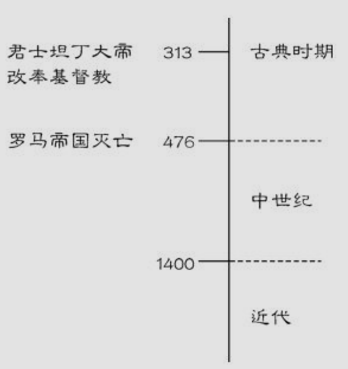
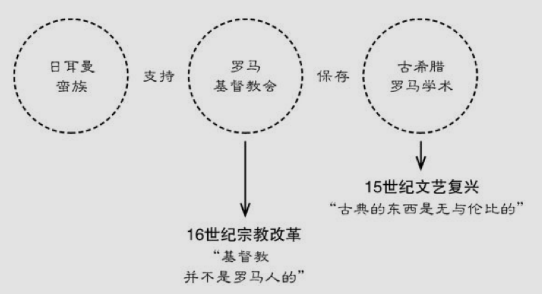
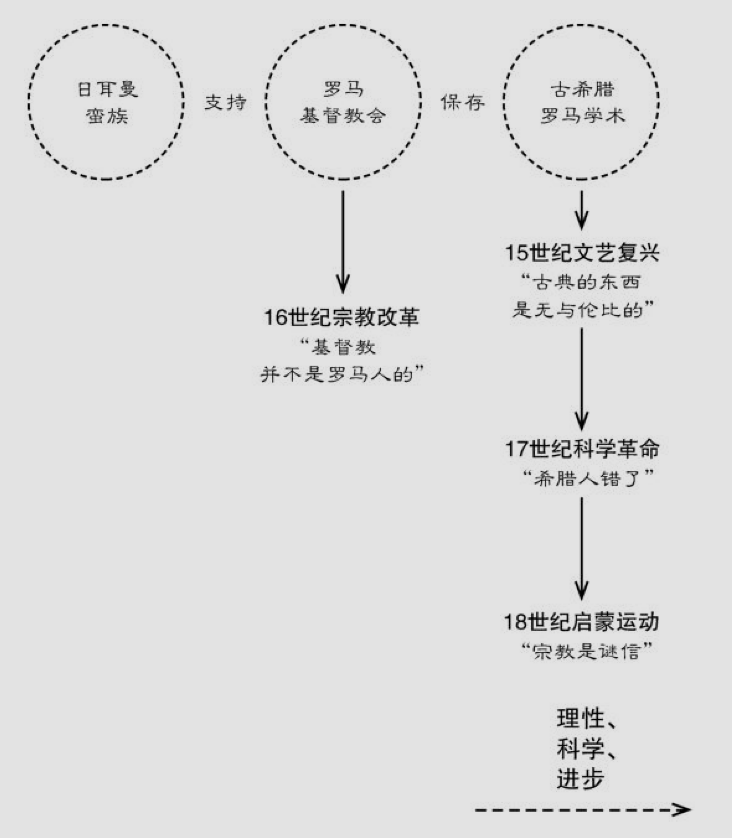
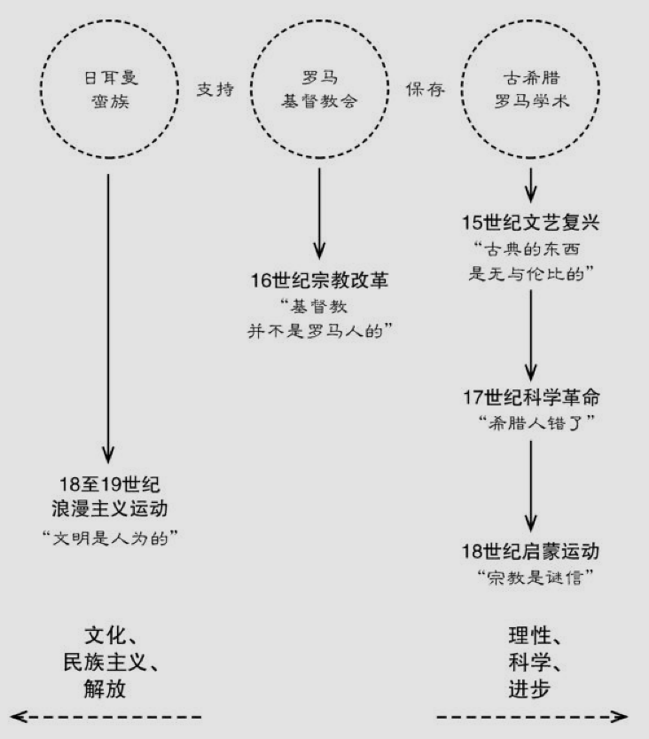

平时比较喜欢读历史，细细想来，根源貌似来自清宫剧，亦或是来自金庸剧。在三观还没有完全形成的时候，就通过看这些电视剧启蒙了。那个时候会去关心这皇帝是谁谁，那大臣是某某，这位英雄生活在哪个年代，那位大侠行走在什么江湖。
后来学校有了历史课，获取的知识相对系统了，记得三本基础的教科书分别说的是中国古代史，中国近现代史，世界史。然后再后来，一档「易中天品三国」节目让很多人重拾历史，一本「明朝那些事」突然走红网络，一位名叫「袁腾飞」的历史老师开始被大家所喜爱。我才反应过来，原来历史可以这样品，也可以这样写，还可以这样聊呀！
有的人读历史，喜欢追究事件的真实性；有的人读历史，喜欢研究年代的准确性；有的人读历史，喜欢探究人物的个性。起初我也很在乎这些，到了现在更关注的是历史可以给我们带来哪些思考，以及我们又能从历史中获得怎么样的启示。
就像前一阵读了「人类简史」之后，总结了博文「人类是地球的癌症？」，那么今天在这里就把另一本特别的历史书「你一定爱读的极简欧洲史」也提炼一番，给大家带来的是「欧洲的宿命–分裂、撕扯、困惑！」。
作者约翰赫斯特在一开始就开门见山地指出欧洲文明的组成元素有三：
1.古希腊和罗马文化。
2.基督教－－犹太教的一个奇特分支。
3.对罗马帝国进行侵略的日耳曼蛮族的战士文化。
三者相互影响，相互渗透，相互融合，一步一步从古代，经中世纪，再到近代，最终形成了现在我们看到的这个欧洲：一个独特的混合体，一个靠着不断征服、定居和强大经济势力渗透、思想观念变革而形成的，值得让世界其他地区马首是瞻的文明。不得不承认，今天全球普遍运用的科学技术都起源于这里。
如果我们去寻找西方哲学、艺术、文学、数学、科学、医学以及政治思想的源头，无一例外的会把我们带回到古希腊。在希腊最辉煌的时期，它并不是一个单一的国家，而是由数个小聚落分区统治的城邦组成的，城邦里所有男性公民会群聚于某个场所就公开事务进行讨论，法律和政策的制定都通过投票表决。
随着城邦人口增长，希腊开始到地中海其他地区开拓殖民地。在今天的土耳其、北非沿岸、西班牙、法国南部、意大利南部都可以找到希腊人安家落户的踪迹。而就在意大利，小村落罗马于希腊人首度相逢，进而向希腊人学习。之后罗马人慢慢建立起一个庞大的帝国，连希腊语句希腊所有殖民地都在其疆域范围内。
这个帝国，北以两大河流「莱茵河」和「多瑙河」为界；西边则是大西洋，因格兰是罗马帝国的一部分，苏格兰和爱尔兰不是；南边远抵北非沙漠；东边疆域则不容易确定，因为此处经常有一些和罗马敌对的帝国。

接着我们来说第二个元素–基督教。犹太人一直相信，宇宙间只有一个真神，这在当时是极不寻常的观点，希腊和罗马人都崇拜多神。而犹太人更异乎寻常的信念是他们认为自己是上帝的选民，所以上帝会对他们特别照顾，因此犹太人必须遵守上帝的律法作为回报，这套法律的基石是「十戒」，是摩西将犹太人从埃及的为奴之地带领出来时告谕他们的。
耶稣，基督教的始祖，就是犹太人，他所有的门徒也都是犹太人，在耶稣传道之时，犹太人再度丧失了国家主权，巴勒斯坦时罗马帝国的一个偏远省份。耶稣的一些徒众对它寄予厚望，希望他能领导起义对抗罗马。当时有很多讲道人和先知，耶稣只是其一。犹太教的领导阶级对这些人心生疑忌，跟罗马人联手，将耶稣处以死刑。耶稣的信徒相信他是上帝的儿子，他被钉在十字架上代表了拯救人类，为了使人类免于毁灭，上帝牺牲了自己的儿子。只要信耶稣，人们就能得救，死后就不会被打入地狱受火烧之苦，更能升入天堂，永远与上帝同在。
然而，这样的教义只对犹太人有效，还是所有人类共有？耶稣死后，他的跟随者们产生了分歧。传统派主张唯有先变成犹太人，遵奉「旧约」中针对犹太人订下的所有严格规定，才可能成为基督徒。如果这一派获胜的话，那么也许今天基督教就只是犹太人信仰的一小哥旁支而已，无足轻重。结果胜出的是另一方，他们认为不必先变成犹太人，所有法规都可以抛诸脑后，基督已经把我们从那些戒律中解放出来，他关于爱的教诲凌驾于一切律法之上。这是早起基督教会一位伟大传教士保罗的观点，他确凿地指出这是所有人的宗教，自此之后，它被广为传播，在罗马帝国的每个角落开花结果。
最后是混合体的第三组人马，入侵罗马帝国的日耳曼蛮族。他们原本住在北方边界处，也就是上面我们说的两大河的北面，在公元400年之后大举入侵，到了公元567年，西罗马帝国已经被他们毁灭。于是欧洲文明的混合体，首先在法国、西班牙和意大利这些地方初具雏形了。
这些蛮族粗野不文，没有留下任何的文字记载，我们对他们入侵帝国之前的事迹所知甚少，只知道他们是一群为了打仗而生活的人群。要劝说一个日耳曼人下田耕种，耐心等待一年一度的收成，比劝他去挑战他人冲锋陷阵通过受伤赢得奖赏要困难。他们的观念里，可以靠流血换到的东西却去靠流汗得来，是没骨气的下等行为。
至此，我们已经检视完了欧洲文明的三个组成元素，在此作个归纳：
希腊人：这是一个简单、符合逻辑、能以数学表达的世界。
基督教：这是一个邪恶的世界，唯有耶稣可以拯救它。
日耳曼人：打仗是好玩的事。
那么这三个元素是如何组合在一起，相互融合，互相影响的呢？我们接着往下说。
一开始基督教时常受到罗马政府的迫害，没收「圣经」，查抄教会，逮捕基督徒，甚至处死那些不肯背弃基督的人。罗马人认为基督徒是颠覆分子，必须铲除。要是罗马人持续这样的迫害，铲除基督教的目标说不定早已得逞。
可是奇迹发生了，公元313年，君士坦丁大帝成为了一位基督徒，或者说公开表态支持基督教会，他认为基督教的神会眷顾他，让他的帝国超越其他所有帝国。而五十年后的另一位信奉基督教的君主更是禁止异教，独尊基督教为国教。
于是，在耶稣于罗马帝国的一个纷争不断的偏远省份传教四百年后，基督教成为了这个帝国正式也是唯一的宗教。主教和教士们现在可以大摇大摆走在各个城镇里，甚至进军乡村，大肆摧毁异教徒寺庙。罗马帝国变成了基督教的天下。
罗马帝国灭亡后，教会幸存了下来，教皇和罗马帝王的角色平起平坐，治理麾下所有的文武百官。教会变成了罗马人的教会。
信奉基督的学者认为，基督教教义是完全完整的真理，古希腊和罗马的伟大哲学家与道德学家只是触及了部分真理，他们的思想和学术可以作为引导，让大众走向真理、辨明真理。因此，虽然他们是异教徒，基督教会还是保存了他们的著作并且加以利用。就这样，基督教会将希腊和罗马的知识成就保存了下来。
日耳曼蛮族侵犯罗马时，并没有摧毁它的意图，他们的目的在于攻城略地，他们愿意承认罗马的统治权，问题在于在公元400年以后，有太多的蛮族来到，侵占了太多的土地，导致罗马君王实际上已经没有管辖的地方了，事实上罗马帝国之所以走到尽头，就是因为疆土没有剩余，没有领地可以统治了。
而这些日耳曼人不懂得如何统治和管理自己占领的社会，拥有蛮族武装的首领纷纷自立为王，建立起很多小邦小国，这些王国之间互相残杀，直到数百年后才有了现代国家的雏形–法国、西班牙、英国。这种情景下的政府脆弱不堪，国王只能把土地分封给他的战士，而这些战士就化身为贵族，理论上国王需要军队，贵族就得供应，要多少给多少，而实际上，贵族们渐渐地把土地视为己有，对于出兵的事宜也逗自作主张。
了解了这些战士的背景和心态后，对于他们侵略罗马帝国后纷纷成为基督徒，我们就不会感到意外。幸存下来的教会经常会和这些战士打交道，主教告诉他们，只要接受基督教的上帝就能克敌制胜。这真是一个很特别的征服者，他们接受了被征服者的宗教。教会明白的告诉这些新来的统治者、国王和贵族，他们的职责之一就是奉行基督信仰。就这样，日耳曼蛮族支持了基督教。

这是一个非常怪异的组合，他们并不是自然而然的结盟，是一个不稳定的组合。它们最后终将瓦解，只是在这之前，它维系了将近千年之久–从公元476年罗马帝国崩灭开始到1400年左右。历史学家称这段时期为中古时期或中世纪。基于这种观点，欧洲历史可以分为三个时代：古代或称古典时期（公元476年以前），中世纪（公元476年到公元1400年左右），近代（1400年之后）。

时至公元1400年，这个混合体开始分崩离析，它的分裂首先始于文艺复兴。文艺复兴学者希望像古代艺术家那样从事艺术创作，希望建造出类似他们的建筑，跟他们一样读写拉丁文，所思所想俱与他们相同。他们想回到过去那个非基督教的世界–但这样的世界已被教会藏匿起来。
不过文艺复兴并没有直接攻击基督教。随着文艺复兴的来到，欧洲社会开启的是一个漫长的世俗化过程。在世俗世界里，宗教可以存在，但是属于私人事务，宗教不能左右社会，不能强制每个人遵守规定和仪式，不能宰割思想。
文艺复兴时中世纪世界遭遇的第一个重大冲击，而16世纪的宗教改革运动时第二个，这回是对基督教会的直接攻击。宗教改革的目的是要基督教回复到尚未罗马化之前的样貌。
罗马天主教强调，行善积德是得救的一个过程：朝圣、施舍钱财给穷人，都有助于最终目的–与上帝同在。而新教说不是这样的，就凭我们，哪有可能做出什么让上帝高兴的事来？我们唯一能做的就是崇信上帝，而只要我们崇信他，上帝就会让我们得救，这是他做过的应许。
所以宗教改革运动，就是以「圣经」的训示和教诲为据，对罗马教廷进行改革的运动，它所带来的信息是：基督教并不是罗马人的宗教，而是所有人的宗教。
一百多年间，罗马天主教和新教互相攻伐，甚至不惜兵戎相见。最终达成长期休兵协议，包容的观念逐渐成形。首先，双方同意某些国家可以信奉新教，某些可以信奉天主教；其次，同一国里的基督教派也可以和平相处。
文艺复兴和宗教改革可以说都是向过去看齐的运动，两者的意图都是将欧洲这个混合体的某个部分分离出来。文艺复兴着眼的是古希腊和罗马的知识成就，宗教改革则是回顾罗马教廷承袭罗马习性之前的基督教会。

下面我们来说说欧洲文化是如何从以上两种「回顾」演变成「前瞻」的。
相信进步，是17世纪科学革命的结果。这段时期是现代科学的开端。日心说，万有引力以及进化论等的提出，所带来的信息是，希腊人错了。对古典的极力尊崇就此打破，人们不断追平了他们，还超越了他们。这些科学家多么聪明啊，可是他们的聪明带来了什么？他们发现人类并不是宇宙的中心，人类其实微不足道。这正是西方普遍面对的困境：我们很聪明，可是我们不断在发现自己的无足轻重。
但是，那个时代的人们并没有因为科学的种种发现而贬低了人的重要性。他们认为，如果我们可以借由理性思索出自然体系的运作规律，并且还能用数学精确表达，那么我们当然也可以利用理性更上一层楼。这份以理性为尊的渴望，成了启蒙运动的驱动力。
启蒙运动带来的信息是：宗教是迷信。因此，尽管宗教曾是欧洲文明的核心，现在也不得不靠边站，由理性取而代之。跟着理性和科学走，未来就有进步，带领我们脱离黑暗，走向光明。

启蒙运动种种理念的第一次试炼，是18世纪末的法国大革命。遗憾的是，尽管对理性保持高度的期望，法国大革命在把国王和教会双双扫除之后，并没有带来民智洞开的新纪元，反而带来流血、暴政和独裁。不过这个怪异混合体的最后一个元素在此前便已失去依靠，这是18世纪末到19世纪初的浪漫主义运动的结果。
浪漫主义运动崇尚感受、情绪以及所有强烈的情感，在这方面它和一心一意信奉理性的启蒙运动形成截然的对比。浪漫主义带来的信息是：文明是人为的，它束缚了我们、局限了我们，唯有活在传统文化当中，你才算活的完整。
浪漫主义运动也催生了民族主义的意识形态，这个观念在当今世界里仍然是一股强大的力量。民族主义主张，拥有相同文化和语言的民族必须生活在一起，成立自己的政府。浪漫主义崇尚情感、文化、民族主义和自由解放，和它背道而驰的正是理性、科学和进步。

从图上我们可以清楚的看到，公元1400年之后发生了什么，图中央，曾经贵为中世纪文明中心的教会，现在是一片空白。文艺复兴、宗教改革、科学革命、启蒙运动、浪漫主义运动，各自以不同的方式削减了教会的权威。
被分裂、被撕扯、被困惑，是欧洲的宿命。其他文明只有单一的传统，不是这三种元素的拼盘，欧洲在道德和智识生活上一直受到煎熬、困惑和瓦解。欧洲的血统来自一种非常混杂的渊源，没有一个可以称作「家」的地方。